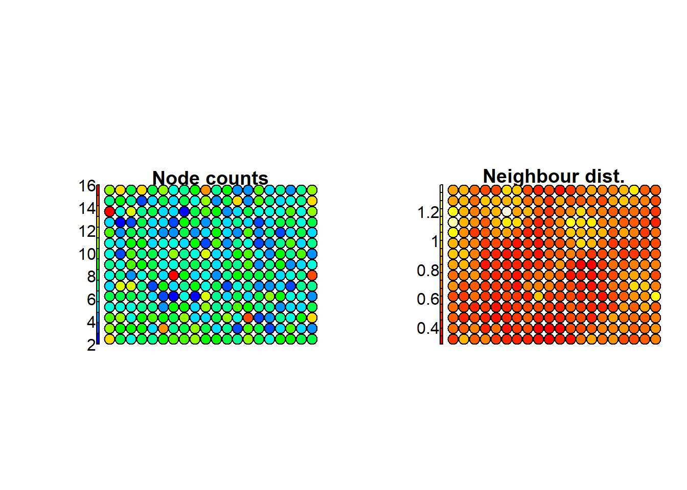

Chapter 8 Defining Territorial Typologies Using Unsupervised Learning: A SOM Approach
Urban expansion across Europe has accelerated in recent decades, significantly blurring the distinctions between urban and rural landscapes. The growing complexity and constant evolution of territorial dynamics require timely urban-rural typologies that systematically classify areas along the continuum from distinctly urban to distinctly rural. Traditional threshold-based classification methods rely heavily on expert input and are labor-intensive, hindering timely updates. This study addresses the issue by developing an unsupervised learning approach based on Self-Organizing Map (SOM) (Kohonen, 1982) to group Swiss municipalities, using a diverse set of demographic, socioeconomic, and built environment variables.
8.1 Geo-demographic context in Switzerland
Switzerland has the highest life expectancy in the world. It counts about 8,5 million inhabitants (official census data 2020), twice as much as at the beginning of the 20th century, mainly because of the high level of immigration. The number of foreigners that currently reside in the country corresponds to about one quarter of the total population. Most of the population (85%) lives in cities. Population aging increased over the course of the 20th century, with one in five person of retirement age today.
8.1.1 Swiss census data
The input census data used in this study come from the Swiss Federal Statistical Office and have been downloaded from the Statistical Atlas of Switzerland (Federal Statistical Office, 2024). Following an in-depth analysis of all data available in the Atlas, eighteen variables from the 2020 census were selected. These variables provide a comprehensive overview of the physical environment (including settlement, forest, agricultural, unproductive, and traffic areas), demographic characteristics (such as natural growth, population density, international and internal migration, proportion of foreigners, youth, and senior population), and the socio-economic profile (covering employment, new buildings, new houses, individual housing, new enterprises, and net income) of the resident population. This information has been aggregated to the municipality level for the purpose of the present investigation.
8.2 Self Organizing Map
We use SOM, an unsupervised competitive learning neural network allowing representing a high-dimensional feature space (defined by the multivariate input dataset), as two-dimensional discretized pattern (the SOM grid of neurons). In SOM the proximity of the units in the output grid reflects the similarity of the corresponding input observations, which guarantees the preservation of the topological structure of the input data.
Compared to other approaches, SOM is very efficient for data visualization. Indeed it provides additional outputs such as the heatmaps, representing the distribution of each input feature across the SOM grid, extremely useful to visually explore the relationship between the input variables.
8.3 Computing lab: SOM
8.3.1 Load the libraries
To perform the analyses and visualize the results you have to load the following libraries:
- kohonen: Supervised and Unsupervised Self-Organizing Maps (SOM)
- aweSOM: offers a set of tools to explore and analyze datasets with SOM
- ggplot2: create Elegant Data Visualizations Using the Grammar of Graphics
- colorpatch: rendering methods (ggplot extensions)
8.3.2 Import the Swiss census dataset
Fist, you have to import the Swiss census dataset for the year 2020, referred to the municipality administrative units. As you can see from the description of the selected variables , some of them can be discarded from the analysis. So, in the following step, we extract a subset of the most meaningful variables for the purpose of the present study.

Figure 8.1: Variables description
Figure 8.2: Variables description
8.3.2.1 Inspect the data
Histograms can be used to show the frequency distribution of the variables and help detect patterns, such as skewness, outliers, and the range of values. Similarly, box plots summarize data using quartiles, helping to identify central tendency, spread, and outliers. Together, these visual tools allow to asses if variables have comparable ranges and help determine if data transformation is needed.
8.3.2.2 Data transformation
To make the variables range comparable, we propose to operate the max-min normalization scaling input census data in the range [0 – 1]. Computationally it subtracts the minimum value from the original one, and then it divides the result by the range (i.e., difference between the maximum and minimum values). This process ensures that all variables in the dataset are in the same range, and can be treated and evaluated together.
However, the min-max transformation is sensitive to outliers, as extreme values can distort the interpretation by compressing the range. To mitigate this, values beyond the upper and lower 5th percentiles will be capped at these thresholds before operating the max-min normalization.
# Define the general function to detect outlier
replace_outliers <- function(df, lower_quantile_value, upper_quantile_value) {
replaced_df <- df
for (col in names(df)) {
lower_quantile <- quantile(df[[col]], probs = lower_quantile_value)
upper_quantile <- quantile(df[[col]], probs = upper_quantile_value)
outlier_indices_lower <- df[[col]] < lower_quantile
outlier_indices_upper <- df[[col]] > upper_quantile
replaced_df[[col]][outlier_indices_lower] <- lower_quantile
replaced_df[[col]][outlier_indices_upper] <- upper_quantile
}
return(replaced_df)
}
# Define the percentile level
lower_quantile_value <- 0.05
upper_quantile_value <- 0.95
# Replace outliers in all variables with upper and lower quantile values
df2020_out_repl <- replace_outliers((subset2020[ , -c(1,2)]), lower_quantile_value, upper_quantile_value)
summary (df2020_out_repl)## p_infrastructure p_forested p_agriculture p_improductible
## Min. :0.01906 Min. :0.07797 Min. :0.1030 Min. :0.000000
## 1st Qu.:0.06232 1st Qu.:0.20751 1st Qu.:0.3190 1st Qu.:0.003188
## Median :0.10815 Median :0.31211 Median :0.4694 Median :0.010854
## Mean :0.15093 Mean :0.32368 Mean :0.4492 Mean :0.056692
## 3rd Qu.:0.20430 3rd Qu.:0.42620 3rd Qu.:0.5970 3rd Qu.:0.047372
## Max. :0.48058 Max. :0.61755 Max. :0.7312 Max. :0.402194
## p_transport natural_growth density migration_intern
## Min. : 0.7136 Min. :-9.0172 Min. : 16.42 Min. :-24.648
## 1st Qu.: 1.9811 1st Qu.:-2.1720 1st Qu.: 82.34 1st Qu.: -7.159
## Median : 3.2459 Median : 0.8865 Median : 189.46 Median : 2.575
## Mean : 4.1497 Mean : 0.7120 Mean : 374.19 Mean : 3.904
## 3rd Qu.: 5.4475 3rd Qu.: 3.9575 3rd Qu.: 480.88 3rd Qu.: 13.534
## Max. :11.9374 Max. : 9.2336 Max. :1662.06 Max. : 37.746
## migration p_foreigners p_individual_houses p_pop_19
## Min. :-5.896 Min. : 4.419 Min. :32.94 Min. :14.83
## 1st Qu.: 0.000 1st Qu.: 9.736 1st Qu.:51.46 1st Qu.:18.61
## Median : 3.389 Median :15.432 Median :61.54 Median :20.53
## Mean : 4.071 Mean :16.915 Mean :59.55 Mean :20.44
## 3rd Qu.: 7.250 3rd Qu.:23.487 3rd Qu.:68.93 3rd Qu.:22.38
## Max. :17.350 Max. :35.327 Max. :78.69 Max. :25.47
## p_pop_65 p_employment p_new_buildings p_new_housings
## Min. :13.22 Min. :0.07255 Min. :0.0000 Min. : 0.0000
## 1st Qu.:16.60 1st Qu.:0.14204 1st Qu.:0.3201 1st Qu.: 0.5315
## Median :19.16 Median :0.22970 Median :1.2799 Median : 3.0057
## Mean :19.51 Mean :0.28020 Mean :1.7691 Mean : 5.0709
## 3rd Qu.:21.95 3rd Qu.:0.36167 3rd Qu.:2.6316 3rd Qu.: 7.2601
## Max. :27.60 Max. :0.75642 Max. :6.2107 Max. :21.1283
## p_new_entreprise net_income
## Min. :0.000000 Min. :25908
## 1st Qu.:0.000000 1st Qu.:30789
## Median :0.002931 Median :34960
## Mean :0.002806 Mean :36848
## 3rd Qu.:0.004514 3rd Qu.:40433
## Max. :0.007919 Max. :59032# Define the general function for min-max normalization
minMax <- function(x) {
(x - min(x)) / (max(x) - min(x))
}
# Apply max-min to the data
dfnorm2020_out_repl<- as.data.frame(lapply((df2020_out_repl), minMax))
summary(dfnorm2020_out_repl)## p_infrastructure p_forested p_agriculture p_improductible
## Min. :0.00000 Min. :0.0000 Min. :0.0000 Min. :0.000000
## 1st Qu.:0.09373 1st Qu.:0.2401 1st Qu.:0.3439 1st Qu.:0.007927
## Median :0.19304 Median :0.4339 Median :0.5833 Median :0.026987
## Mean :0.28573 Mean :0.4554 Mean :0.5510 Mean :0.140958
## 3rd Qu.:0.40137 3rd Qu.:0.6454 3rd Qu.:0.7863 3rd Qu.:0.117785
## Max. :1.00000 Max. :1.0000 Max. :1.0000 Max. :1.000000
## p_transport natural_growth density migration_intern
## Min. :0.0000 Min. :0.0000 Min. :0.00000 Min. :0.0000
## 1st Qu.:0.1129 1st Qu.:0.3751 1st Qu.:0.04005 1st Qu.:0.2803
## Median :0.2256 Median :0.5426 Median :0.10515 Median :0.4363
## Mean :0.3061 Mean :0.5331 Mean :0.21740 Mean :0.4576
## 3rd Qu.:0.4218 3rd Qu.:0.7109 3rd Qu.:0.28224 3rd Qu.:0.6119
## Max. :1.0000 Max. :1.0000 Max. :1.00000 Max. :1.0000
## migration p_foreigners p_individual_houses p_pop_19
## Min. :0.0000 Min. :0.0000 Min. :0.0000 Min. :0.0000
## 1st Qu.:0.2536 1st Qu.:0.1720 1st Qu.:0.4048 1st Qu.:0.3560
## Median :0.3994 Median :0.3563 Median :0.6251 Median :0.5357
## Mean :0.4288 Mean :0.4043 Mean :0.5816 Mean :0.5273
## 3rd Qu.:0.5655 3rd Qu.:0.6169 3rd Qu.:0.7866 3rd Qu.:0.7097
## Max. :1.0000 Max. :1.0000 Max. :1.0000 Max. :1.0000
## p_pop_65 p_employment p_new_buildings p_new_housings
## Min. :0.0000 Min. :0.0000 Min. :0.00000 Min. :0.00000
## 1st Qu.:0.2344 1st Qu.:0.1016 1st Qu.:0.05153 1st Qu.:0.02516
## Median :0.4130 Median :0.2298 Median :0.20607 Median :0.14226
## Mean :0.4373 Mean :0.3036 Mean :0.28485 Mean :0.24001
## 3rd Qu.:0.6069 3rd Qu.:0.4228 3rd Qu.:0.42372 3rd Qu.:0.34362
## Max. :1.0000 Max. :1.0000 Max. :1.00000 Max. :1.00000
## p_new_entreprise net_income
## Min. :0.0000 Min. :0.0000
## 1st Qu.:0.0000 1st Qu.:0.1474
## Median :0.3702 Median :0.2733
## Mean :0.3543 Mean :0.3303
## 3rd Qu.:0.5701 3rd Qu.:0.4385
## Max. :1.0000 Max. :1.00008.3.3 Run SOM
The main idea with SOM is to map the input high-dimensional feature space in a lower-dimensional output space organized on a grid made up of regular units (i.e. the neurons). At the end of the process, each observation from the input space (\(X_{k,i}\)) will be associated (i.e., mapped) to a unit in the SOM grid. Depending on the size of the grid, one unit can include several input observations.
The first step consists in defining the size and geometry of the SOM grid. In this case we define a rectangular grid of 18 by 13 units, allowing to allocate, on average, about 15 input-items per units, and whose geometry reproduces the shape of the study area. (NB: several parameters and configurations of the SOM grid can be implemented and compared, seeking to minimize the Quantization Error, QE). Finally, you can run the SOM model.
For the computation we introduce here the method proposed by (Kohonen, 1982) and implemented in the R package kohonen (Wehrens & Buydens, 2007).
####Create the SOM-grid
Before running SOM, you have to transform the data frame to the format matrix and create the grid of output units.
The general R function set.seed is used for creating simulations of random objects that can be reproduced.
The rlen indicates the number of times the complete data set will be presented to the network, while for the other parameters we will keep the default values.
# Use max-min data transformation
set.seed(123)
# Run SOM
SOM2020<- som(mx2020,
grid=som_grid,
rlen=1000)
print(SOM2020)## SOM of size 20x15 with a rectangular topology.
## Training data included.8.3.3.1 Model evaluation
Finally, you can optimize the size of the grid by inspecting several quality measure and changing the parameters accordingly. In particular we will explore the following:
- Changes: shows the mean distance to the closest codebook vector during the training.
- Quantization error: average squared distance between the data points and the map’s codebook to which they are mapped. Lower is better.
- Percentage of explained variance: similar to other clustering methods, the share of total variance that is explained by the clustering (equal to 1 minus the ratio of quantization error to total variance). Higher is better.

# Evaluate the results
QEM<-somQuality(SOM2020, dfnorm2020_out_repl)
## Quality measures:
QEM$err.quant # Quantization error## [1] 0.311374## [1] 76.538.3.3.2 SOM’s main outputs
The main graphical outputs of SOM are the node counts, the neighborhood distances, and the heatmaps.
- Node counts map: informs about the number of input vectors falling inside each output unit.
- Neighbourhood distance plot: shows the distance between each unit and its neighborhoods.
- Heatmaps: dispaly the distribution of each input variable, associated to each input vectors, across the SOM grid.
# Create a color palette
coolBlueHotRed <- function(n, alpha = 1) {rainbow(n, end=4/6, alpha=alpha)[n:1]}
#display two plots side-by-side
par(mfrow = c(1, 2))
# Plot node counts map
plot(SOM2020, type="count", main="Node counts", palette.name=coolBlueHotRed)
# Plot SOM neighbourhood distance
plot(SOM2020, type="dist.neighbours", main = "Neighbour dist.")
Side-by-side heatmaps provide a visual comparison, enabling researchers to identify relationships within the high-dimensional input space . This approach helps assess whether the input variables show similar patterns or complementary trends.
# Plot heatmaps for selected variables
for (i in 1:18)
{
plot(SOM2020, type = "property", property = getCodes(SOM2020)[,i],
main=colnames(getCodes(SOM2020))[i], palette.name=coolBlueHotRed)
}
Figure 8.3: Heatmaps
8.4 Hierarchical clustering
The SOM units were ultimately grouped into a smaller set of primary clusters, representing the territorial typologies in Switzerland based on the 2020 census data. Hierarchical clustering was applied to generate these final partitions: SOM units are iteratively merged based on Euclidean distance until the desired number of main clusters (six in our case) is achieved.
#Run hierarchical clustering
CV2020 <- getCodes(SOM2020) # Extract codebook vectors
cls2020 <- cutree(hclust(dist(CV2020)), 6)We can display the SOM-grid using different colors for each one of the six final main clusters.
# Color palette definition.
# NB: If you change the number of hierarchical clustering, remember to set the number of colors accordingly.
map_palette <- c("darkolivegreen","darkorange","darkolivegreen2","khaki1","firebrick","darkgoldenrod4")
plot(SOM2020, type="mapping", pchs="", bgcol = map_palette[cls2020], main = "Clusters")
legend("right", legend = unique(cls2020), fill = map_palette, title = "Cluster Colors", cex=0.8)#Assign the cluster number (based on hierarchical clustering) to each unit
clasgn <- cls2020[SOM2020$unit.classif]
dfnorm2020_out_repl$hc<-clasgn
clsnorm<-cbind(dfnorm2020_out_repl, subset2020$BFS_nummer)
# Export the table with clusters
write.table(clsnorm, file="hcM_6cls.csv", sep=",")8.4.1 Map clusters onto the geographical space
The six primary clusters can be projected onto the geographical space to elaborate a map that displays the spatial distribution of territorial typologies at the municipal level across the urban-rural continuum in Switzerland. To this end, you can run the code below.
Alternatively , you can import the final table with clusters into a GIS and join it to the values to the administrative limits at municipality level in Switzerland. You need only two columns: the code identifying each municipality (“BFS_nummer”) and the cluster number (hc).
#Load the following packages needed for visualization
library(st)
library(sf)
library(ggspatial)
library(dplyr)# Load the shapefile data
CH_outline <- st_read("data/SOM/Municiplities.shp")
# Quick check the shapefile data
ggplot() +
geom_sf(data = CH_outline, size = 1.5, color = "black", fill = "cyan1") +
ggtitle("Swiss municiplities") +
coord_sf()# Rename the column
colnames(clsnorm)[20] <- "BFS_NUMMER"
# Merge the dataframe and shapefile together by the column with the same name
z = merge(CH_outline, clsnorm, by = "BFS_NUMMER")
# Rename the column with clustering results
z$cluster <- as.numeric(z$hc)# Mapping the clusters using ggplot (as in a GIS)
CH_cluster <- ggplot(data = z) + # Original data
geom_sf(aes(fill = as.factor(cluster))) + # Mapping the clusters
annotation_scale(location = "bl", width_hint = 0.3,
pad_x = unit(0.2, "cm"), pad_y = unit(0.1, "cm")) +
# Mapping scales, which are calculated by project coordinates
annotation_north_arrow(location = "tr", which_north = "true",
pad_x = unit(0.0, "cm"), pad_y = unit(0.1, "cm"),
style = north_arrow_fancy_orienteering) + # Mapping north arrow
scale_fill_manual(values = c("darkolivegreen","darkorange","darkolivegreen2","khaki1","firebrick","darkgoldenrod4"), # The same as in personal palette
name="Clusters",
labels = c("1: Rural Forest",
"2: Suburban area",
"3: Aging Rural",
"4: Rural Urbanising Frontier",
"5: Urban area",
"6: Unproductive/Woodlands"))+
theme_minimal() +
labs(title = "Spatial pattern distribution of Swiss population census")
# Save the map as jpg
ggsave("CH_typologies.jpg")
CH_cluster8.5 Clusters characterization
To interpret the final main clusters in therms of their geo-demographic characteristics, you can evaluate the distribution of each variable within the clusters by using box plots (also known as whisker plot).
Box-plot is a standardized way to display a dataset based on the five-number summary statistics: the minimum, the maximum, the sample median, and the first and third quartiles (i.e., the median of the lower half (25%) and the median of the upper half (75%) of the dataset).
# Creates an empty list object that will be filled by the loop
cls20M <- list()
# Split the single clusters
for(i in 1:6) {
cls20M[[i]]<-subset(clsnorm, clsnorm$hc==i)
}
clsvar20M <- lapply(cls20M, "[", c(1:18))
# Box-plots for the single clusters
for (i in 1:6) {boxplot ((clsvar20M[[i]]), main=paste("Cluster", i), mar=c(8,3,3,1), cex.axis=0.5, las=2)}To better investigate the values assumed by each class of variables withing the different clusters, you can group them by category.
# Box plot by categories: "Physical space"
clsvar20M <- lapply(cls20M, "[", c(1:5))
par(mfrow=c(2,4), mar=c(7,3,3,1), cex.axis=0.7)
for (i in 1:6) {boxplot ((clsvar20M[[i]]), main=paste("Cluster", i), las=2)}Figure 8.4: Physical space
# Box plot by categories: "Demographics"
clsvar20M <- lapply(cls20M, "[", c(6:13))
par(mfrow=c(2,4), mar=c(7,3,3,1), cex.axis=0.7)
for (i in 1:6) {boxplot ((clsvar20M[[i]]), main=paste("Cluster", i), las=2)}Figure 8.5: Demographics
# Box plot by categories: "Socio-economics"
clsvar20M <- lapply(cls20M, "[", c(14:18))
par(mfrow=c(2,4), mar=c(7,3,3,1), cex.axis=0.7)
for (i in 1:6) {boxplot ((clsvar20M[[i]]), main=paste("Cluster", i), las=2)}Figure 8.6: Socio-economics
8.6 Conclusions
Results of the present study reveal the main patterns of the population in Switzerland based on the surveyed land-use, socio-economic, and demographic indicators. To characterize the final main clusters, the distribution of each variable within them have been assessed by using box plots. We could thus identify main clusters including the most developed and active cities with higher income, the peri-urban areas mostly devoted to the agricultural activity, or the areas with higher levels of migration.
SOM heatmaps allow to display the pattern distribution of each input variable over the SOM-grid and how values change in space. Visualized side by side, heatmaps show a picture of the different areas and their characteristics. In this way it is possible to explore the level of complementarity that links one or more variables among them.
In conclusion, in the present study we proposed a performant data-driven approach based on unsupervised learning allowing to extract useful information from a huge volume of multivariate population census data. This approach led to represent and interpret the main patterns characterizing the dynamic of population in Switzerland in the recent period.
8.7 Further analyses
To ensure that everything is perfectly clear, we propose you to answer the following questions and to discuss your answers with the other participants to the course or directly with the teacher.
Change the size of the gridmap and check if you get better results for SOM. N.B. Better results are achieved when the quantisation error decreases, the explained variance increases, and there are no empty observations revealed by the Node Counts map.
Focusing on Cluster 6: which variable characterize it the most? Based on these variables, which class of land use can be associated to this cluster? And in the case of Cluster 4?
Describe the distribution of the clusters in the geographical space. In more details, describe to which kind of land use the different clusters can be referred and specify why.
From the visual inspection of the heatmaps, describe the correlation you can observe between the following variables: a) “p_transport” and “p_infrastructure”; b) “p_agriculture” and “p_improductible”.